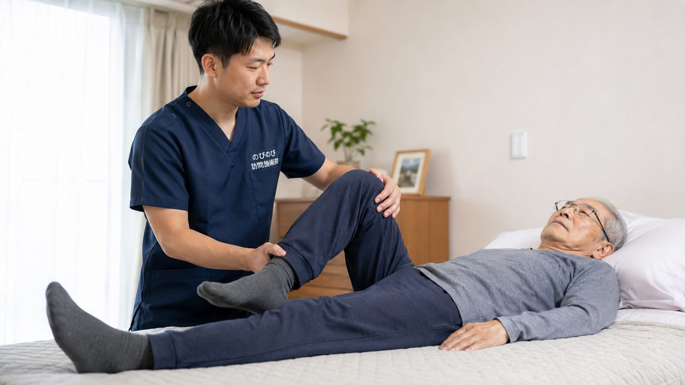

変形性膝関節症で膝が痛む方は、通院がむずかしくても訪問の鍼灸で在宅ケアを受けられます。医師が必要と認めた慢性の膝の痛みなら、はり・きゅうで医療保険が使え、1種類の施術は総額3,950円、1割負担の方でおよそ1回395円です。膝の変形そのものを元に戻すものではありませんが、こわばりや痛みを和らげ、動かしやすさを支えることが期待できます。
この記事のポイント
慢性的に続く膝の痛みで、医師が鍼やお灸での治療が必要と認めて同意書を書いてくれ、かつ通院がむずかしければ、はり・きゅうの医療保険で受けられる場合があります。診断はお医者さんが行うものなので、まず整形外科で膝の状態を診てもらったうえでご相談ください。同意書の手続きはのびのびが支えていきます。
膝の軟骨がすり減るとは、どういうことか
変形性膝関節症は、膝の骨と骨のあいだでクッションの役目をする軟骨が、年月とともに少しずつすり減っていく状態です。軟骨が薄くなると骨どうしがあたりやすくなり、立ち上がるとき、歩き始め、階段の上り下りで膝の内側が痛む方が多くいらっしゃいます。進むと膝がまっすぐ伸びにくくなったり、いわゆるO脚のように脚の形が変わってきたり、関節に水がたまってはれぼったく感じることもあります。
高齢の方に非常に多く、両膝に出る方も少なくありません。痛みをかばって歩くうちに、太ももやお尻の筋肉が落ちて、ますます膝に負担が集まる。そんな悪いめぐりに入りやすいのがこの症状の特徴です。
その膝の腫れや痛み、まず整形外科で診てもらいましょう
鍼やお灸をおすすめする前に、確かめておきたいことがあります。膝が急に大きくはれて熱をもっている、曲げ伸ばしがほとんどできないほど痛む、水がたまってパンパンに張っている、転んだあとから急に痛くなった、夜も眠れないほど痛い。こうしたときは、まず整形外科を受診してください。
感染や骨の変化など、先に医療機関で調べたほうがよい場合があります。変形性膝関節症かどうかの診断も、レントゲンなどをもとにお医者さんが行うものです。きちんと診断を受けたうえで、慢性的に続く痛みに対して在宅でのケアを組み合わせていくのが安心です。
変形性膝関節症は保険で受けられる？
膝の痛みが「変形性膝関節症」という病名であっても、慢性的に続く関節の痛みで、医師が「鍼やお灸での治療が必要」と認め、同意書を書いてくれれば、はり・きゅうの医療保険で受けられる場合があります。膝の痛みは、はり・きゅうの療養費で対象となる慢性の痛みとして扱われることが多い症状です。加えて、通院がむずかしく訪問で受ける必要があることも条件になります。同意書の手続きは、のびのびがかかりつけの先生とのあいだに立って引き受けますので、どこから手をつければよいかわからない、という方もご安心ください。 医療保険を使うので、お支払いは自己負担分だけです。断られたときの次の一手は「同意書のページ」で詳しくご紹介しています。
訪問で一人が1種類の施術を受けると、施術の総額は3,950円。そこから1割負担の方でおよそ1回395円、2割負担の方でおよそ790円が目安です。介護保険の限度額とは別の枠なので、デイサービスやヘルパーなど他のサービスを使っていても、その枠を圧迫しません。その月の明細をお渡ししますので、何にいくらかかっているかがはっきりわかります。週2回のペースなら、ひと月の自己負担はおよそ3,160円（1割の方）になります。別枠になる理由は「訪問鍼灸は医療保険？介護保険？」で詳しく書いています。
痛い膝だけでなく、脚全体を見ていくわけ
膝が痛いからといって、膝だけをさわって終わりにはしません。膝をかばって歩いていると、太ももの前や内側、お尻、ふくらはぎ、反対側の脚まで、あちこちに無理がかかっています。片方の膝をかばって反対の脚に負担が偏っていないか、股関節や足首の動きはどうか、立ったときに膝がどちらへ流れているか。
こうしたことまで含めて脚全体を見ていきます。片側の膝をかばい続けるうちに反対側の脚の筋力が落ちてきていることに、痛みが出る前に気づく。脚全体を見ていくと、そうしたことにも行き当たります。痛むところだけでなく体全体を見られるのは、訪問ならではの見立てです。
鍼とお灸は、すり減った膝にどう働きかけるか
軟骨がすり減ったこと自体を元どおりにするものではありません。ですが、膝まわりや太もも、ふくらはぎのこわばった筋肉を鍼やお灸で和らげ、血のめぐりを促すことで、痛みや重だるさが楽になることが期待できます。冷えると膝がこわばって痛む方には、お灸のあたたかさが心地よく感じられることが多いものです。
筋肉のこわばりがとれると、こわばりのぶんの動かしにくさが軽くなり、曲げ伸ばしがいくらか楽になる方もいらっしゃいます。無理に強く押したり、痛いところをぐいぐい動かしたりはしません。その日の膝の状態を見ながら、心地よさを大切に進めます。
膝が痛いのに通院、を続けなくていい
膝が痛む方にとって、治療に出かけること自体が大きな負担です。玄関の段差、車の乗り降り、待合室で長く座って順番を待つこと、そして帰り道。どれも痛む膝にこたえます。せっかく施術を受けても、その行き帰りで膝を痛めてしまっては本末転倒です。
訪問なら、住み慣れたご自宅で、いつもの椅子やベッドの上で施術を受けられます。移動で膝に負担をかけずにすみ、ご家族が付き添って病院へ送り迎えする手間もありません。「通うのがつらくて足が遠のいていた」という方にこそ、在宅でのケアが向いています。
O脚や水たまりとつきあう、暮らしの工夫
施術と合わせて、日々のちょっとした心がけも膝を助けます。膝を冷やさないよう、夏の冷房でもひざ掛けを一枚用意しておく。痛くない範囲で、椅子に座って膝をゆっくり伸ばす運動を続けて、太ももの筋肉が落ちないようにする。
重い荷物を持って長く歩くのは避け、買い物はこまめに分けるかカートを使う。体重が増えるとそのぶん膝の負担も増えるので、食事のとり方を見直すのも一つです。水がたまってはれているときや強く痛むときは無理をせず、その状態はかかりつけの先生にも伝えておきましょう。
膝だけでなく、まわりの筋肉からゆるめる
施術では膝まわりだけでなく、太ももの前後やふくらはぎ、お尻の筋肉まで含めてみていきます。膝をかばう歩き方が続くと、その周りが張って、さらに膝へ負担がかかるためです。周りからゆるめて負担そのものを減らしていくことで、座っているときの痛みや歩き出しが楽になることを目指します。感じ方には個人差があります。
こわばりがやわらぐと、動かしやすさにつながることがあります。その方その方の膝の様子を見ながら、無理なく続けられるように進めていきます。
「歳だから膝が痛いのは仕方ない」の前に
膝の痛みは「もう歳だから仕方ない」と受けとめて、そのままにされがちです。ですが、痛いからと動かさないでいると、膝を支える筋肉がやせて、かえって痛みが出やすくなったり、動ける範囲がせまくなっていくことがあります。まずは整形外科で今の膝の状態を診てもらい、慢性の痛みには在宅でできるケアを組み合わせる。
そうやって「動かせる膝」を保っていくことが、これからの暮らしを支えます。豊中・吹田・茨木・箕面・摂津・池田、尼崎・伊丹、淀川区・東淀川区・都島区・北区・旭区にお住まいで、膝の痛みで通院がおつらい方は、一度ご相談ください。
よくある質問
変形性膝関節症でも保険で受けられますか？
慢性的に続く膝の痛みで、医師が鍼やお灸での治療が必要と認めて同意書を書いてくれ、かつ通院がむずかしければ、はり・きゅうの医療保険で受けられる場合があります。診断はお医者さんが行うものなので、まず整形外科で膝の状態を診てもらったうえでご相談ください。同意書の手続きはのびのびが支えていきます。
膝の変形やO脚は施術で治りますか？
すり減った軟骨や骨の変形そのものを元に戻すものではありません。鍼やお灸、あわせて行う手技は、膝まわりや脚のこわばった筋肉を和らげ、痛みや動かしにくさを楽にすることが期待できるケアです。変形の程度や治療方針についてはかかりつけの先生とご相談いただき、在宅でのケアはその補いとしてお考えください。